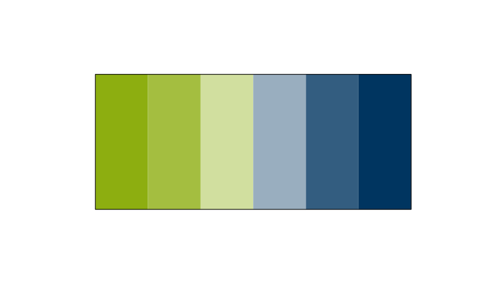
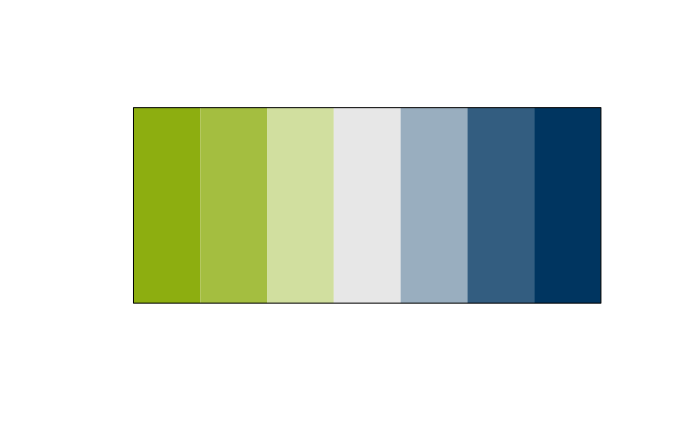
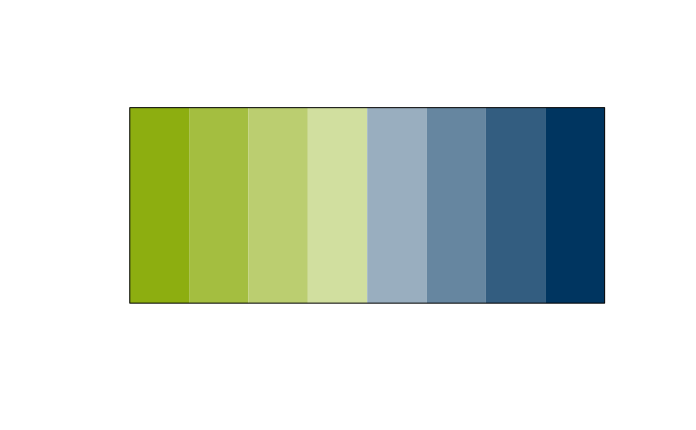
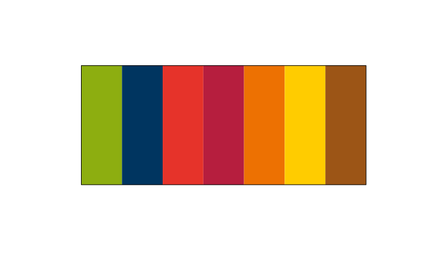

This vignette describes how to display and retrieve the RUB colors and palettes. For details on using these palettes in ggplot2, see the separate vignette XXX.
Colors
RUBer provides easy access to the colors as specified in the RUB corporate design. Once the package is loaded, access all available colors by typing RUB_colors. Note that I assigned that the color names were assigned as part of this package and are not offically sanctioned by the corporate design guide.
# Retrieve all available colors
RUB_colors
#> green green_80 green_60 green_40 green_20 blue
#> "#8DAE10" "#A4BE40" "#BBCE70" "#D1DF9F" "#E8EFCF" "#003560"
#> blue_80 blue_60 blue_40 blue_20 lighter grey light grey
#> "#335D80" "#6686A0" "#99AEBF" "#CCD7DF" "#ECECEC" "#E7E7E7"
#> red dark red orange gold brown tan
#> "#E6332A" "#B61E3E" "#ED7102" "#FFCC00" "#9C5516" "#C1BAA3"
#> dark brown asparagus
#> "#59201B" "#8C8751"
# ... access individual color by index
RUB_colors[1]
#> green
#> "#8DAE10"
# ... or by name
RUB_colors["dark red"]
#> dark red
#> "#B61E3E"To retrieve several colors at once, use the getter function get_RUB_colors().
# Retrieve several colors by name
get_RUB_colors("green", "blue", "orange")
#> green blue orange
#> "#8DAE10" "#003560" "#ED7102"
# Retrieve several colors by index
get_RUB_colors(4:6, 9)
#> green_40 green_20 blue blue_40
#> "#D1DF9F" "#E8EFCF" "#003560" "#99AEBF"Palettes
The colors are combined in several palettes. To retrieve all available palettes, use RUB_palettes. To retrieve a particular palette by name, use the function get_RUB_palettes plus the number of required colors in round brackets like so get_RUB_palettes(palette = "discrete_5")(5). If the palette contains less elements than requested, additional colors will automatically be extrapolated.
Note that the RUB colors as defined by the corporate design were not designed with data visualization in mind. The palettes presented here are ad-hoc and rather informal, until the corporate design is offically extended to include visualization design.
# All availabble palettes
RUB_palettes
#> $discrete
#> green blue red dark red orange gold brown
#> "#8DAE10" "#003560" "#E6332A" "#B61E3E" "#ED7102" "#FFCC00" "#9C5516"
#>
#> $discrete_contrast
#> gold red brown tan
#> "#FFCC00" "#E6332A" "#9C5516" "#C1BAA3"
#>
#> $discrete_1
#> green
#> "#8DAE10"
#>
#> $discrete_2
#> green blue
#> "#8DAE10" "#003560"
#>
#> $discrete_3
#> green light grey blue
#> "#8DAE10" "#E7E7E7" "#003560"
#>
#> $discrete_4
#> green green_60 blue_40 blue
#> "#8DAE10" "#BBCE70" "#99AEBF" "#003560"
#>
#> $discrete_5
#> green green_60 light grey blue_40 blue
#> "#8DAE10" "#BBCE70" "#E7E7E7" "#99AEBF" "#003560"
#>
#> $discrete_6
#> green green_80 green_40 blue_40 blue_80 blue
#> "#8DAE10" "#A4BE40" "#D1DF9F" "#99AEBF" "#335D80" "#003560"
#>
#> $discrete_7
#> green green_80 green_40 light grey blue_40 blue_80 blue
#> "#8DAE10" "#A4BE40" "#D1DF9F" "#E7E7E7" "#99AEBF" "#335D80" "#003560"
#>
#> $discrete_8
#> green green_80 green_60 green_40 blue_40 blue_60 blue_80 blue
#> "#8DAE10" "#A4BE40" "#BBCE70" "#D1DF9F" "#99AEBF" "#6686A0" "#335D80" "#003560"
#>
#> $continuous
#> green blue
#> "#8DAE10" "#003560"
#>
#> $continuous_diverging
#> green light grey blue
#> "#8DAE10" "#E7E7E7" "#003560"
# Retrieve five colors from the palette "discrete_5"
get_RUB_palettes(palette = "discrete_5")(5)
#> [1] "#8DAE10" "#BBCE70" "#E7E7E7" "#99AEBF" "#003560"
# Retrieve ten colors, five of which are extrapolated, from the palette
# "discrete_5".
get_RUB_palettes(palette = "discrete_5")(10)
#> [1] "#8DAE10" "#A1BC3A" "#B5CA65" "#C9D697" "#DDE1CC" "#D5DADE" "#B3C1CC"
#> [8] "#88A0B4" "#446A8A" "#003560"We can visualize all palettes using Emil Hvitfeldt’s excellent prismatic package.
Plots for the continuous palettes
First off, we have the two continuous palettes, “continuous” and “continuous_diverging”.
plot(prismatic::color(RUBer::get_RUB_palettes(palette = "continuous")(100)))
plot(prismatic::color(RUBer::get_RUB_palettes(palette = "continuous_diverging")(100)))Plots for the numbered discrete palettes
Second, we have all the numbered discrete palettes, which, for example, were used to display the distribution of answers for the survey items. numbered discrete palettes are pre-defined up to a total of eight separate colors, after, it is necessary to rely on extrapolation.
plot(prismatic::color(get_RUB_palettes(palette = "discrete_1")(1)))
plot(prismatic::color(get_RUB_palettes(palette = "discrete_2")(2)))
plot(prismatic::color(get_RUB_palettes(palette = "discrete_3")(3)))
plot(prismatic::color(get_RUB_palettes(palette = "discrete_4")(4)))
plot(prismatic::color(get_RUB_palettes(palette = "discrete_5")(5)))
plot(prismatic::color(get_RUB_palettes(palette = "discrete_6")(6)))
plot(prismatic::color(get_RUB_palettes(palette = "discrete_7")(7)))
plot(prismatic::color(get_RUB_palettes(palette = "discrete_8")(8)))
# If you need more than eight unique colors, simply increase the number of
# requested colors in the function call like this:
plot(prismatic::color(get_RUB_palettes(palette = "discrete_8")(16)))Plots for the discrete palettes
Last, I turned most of the unqiue colors in the RUB corporate design guide into one awfully looking palette simply called “discrete”. Avert your eyes, if at all possible! The second palette, “discrete_contrast” has four colors that form a nice contrast to the base RUB colors, i.e. the Green and Blue.
plot(prismatic::color(get_RUB_palettes(palette = "discrete")(7)))
plot(prismatic::color(get_RUB_palettes(palette = "discrete_contrast")(4)))